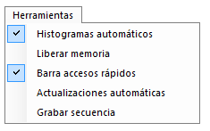
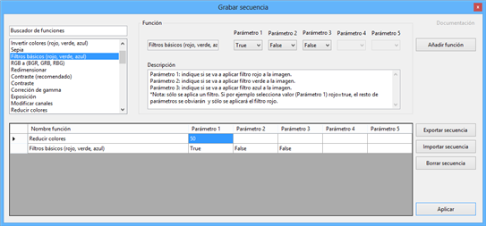

Penúltima opción de la barra superior de herramientas. En la siguiente ilustración se muestra su aspecto y funciones.
Ilustración 1. Menú herramientas.

Se compone de varias opciones para modificar el aspecto y funcionalidades de Apolo, además de la posibilidad de grabar una secuencia de actuación sobre una imagen.
Esta opción activa o desactiva los histogramas mostrados en la parte derecha de Apolo. Si la opción se mantiene activa, al hacer una modificación sobre la imagen principal en 5 segundos se actualizan los histogramas.
Una vez seleccionada esta opción, se muestra un cuadro de diálogo advirtiendo de que se perderán todas las imágenes almacenadas. Esto quiere decir que desde el momento en que se libera la memoria, no se podrá hacer retroceso de las imágenes puesto que sólo permanecerá la imagen actual.
Este proceso puede ralentizar el programa unos instantes, e incluso generar algún error no controlado. En este último caso, es aconsejable notificarlo.
Esta opción muestra u oculta la barra superior de accesos rápidos, formada por imágenes y situada en la parte superior, justo debajo de la barra de herramientas.
Esta opción, en caso de estar activada, al arrancar el programa busca actualizaciones, y en caso de encontrar alguna versión más reciente de Apolo lo notifica dando la opción de descargar e instalar la aplicación en ese momento.
Esta interesante función, permite automatizar y exportar una serie de funciones predefinidas para poder ahorrar tiempo a la hora de modificar imágenes. El formulario puede verse en la siguiente imagen.
Ilustración 2. Formulario Grabar secuencia.

Lo que se pretende con esta función es poder seleccionar una serie de funciones (con sus correspondientes parámetros) y poder aplicarlas de forma automática. Como puede observarse en la imagen, en la parte de la izquierda se muestran todas las funciones disponibles que se pueden utilizar. Una vez seleccionada la función (en la imagen Filtro básico), en la parte de la derecha se muestran los parámetros disponibles y justo debajo la descripción de cada parámetro. Adicionalmente, si se quiere saber más sobre la función, se puede pulsar en la opción habilitada en la parte superior derecha para abrir la documentación.
Después de haber seleccionado la función y sus parámetros, se debe pulsar en Añadir función, y se mostrará en la tabla inferior. Dentro de la tabla se puede modificar los parámetros directamente sin necesidad de volver a añadir una función.
Una vez creada la secuencia y si se quiere guardar para posteriores usos, se debe pulsar en el botón Exportar secuencia y mostrará un cuadro de diálogo para definir su nombre. Tras guardarlo, pulsando en el botón Importar secuencia se mostrarán todas las secuencias guardadas para poder abrirlas.
Finalmente, para aplicar la secuencia creada/importada, basta con pulsar el botón Aplicar y se ejecutarán los pasos. En caso de que no se realicen todos los pasos, revise que los parámetros de las funciones son correctos. Tenga en cuenta que si algún parámetro es incorrecto, no se mostrará un mensaje de error sino que se detendrá la ejecución de la secuencia.
Created with the Personal Edition of HelpNDoc: Full-featured multi-format Help generator